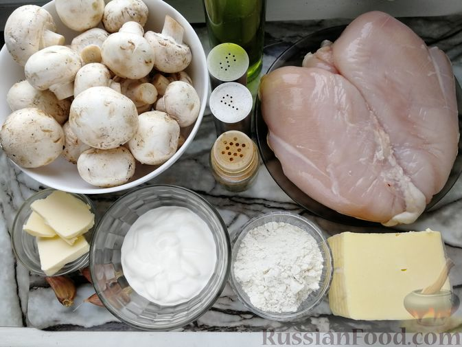
Шаг 1. Подготавливаем необходимые ингредиенты. Ещё понадобится 500 мл горячей воды. Духовку включаем разогреваться до 180 градусов.
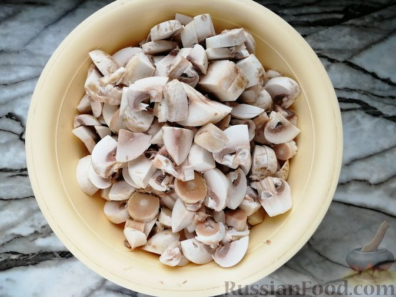
Шаг 2. Шампиньоны промываем и обсушиваем бумажным полотенцем. Нарезаем грибы кубиками или пластинками.
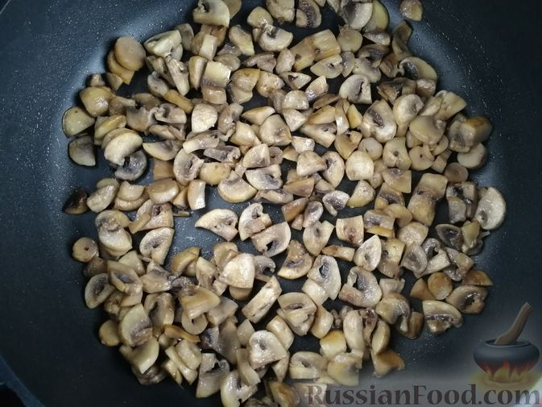
Шаг 3. В сковороде разогреваем растительное масло, выкладываем шампиньоны и обжариваем на сильном огне, пока выпарится лишняя влага и грибы немного зарумянятся, 5-7 минут.
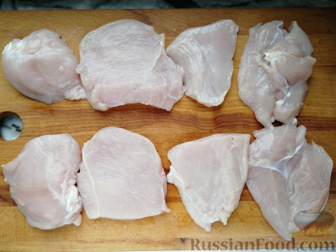
Шаг 4. Пока обжариваются грибы, куриное филе разрезаем вдоль на пластинки толщиной 1,5-2 см, а потом каждый пласт ещё на 2 части (как на фото).
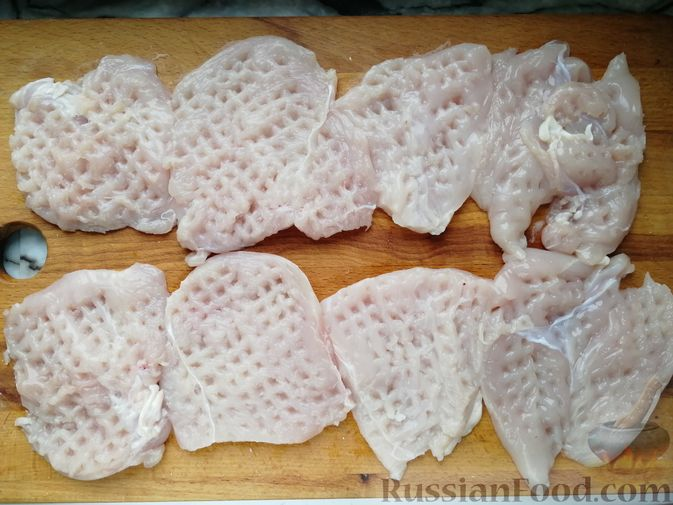
Шаг 5. Отбиваем каждый кусочек курицы через пищевую плёнку.
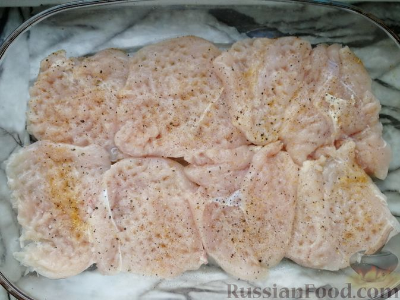
Шаг 6. Выкладываем филе в форму для запекания в один слой. Добавляем соль (1/3 ч. ложки), перец (1/5 ч. ложки), приправу для курицы.
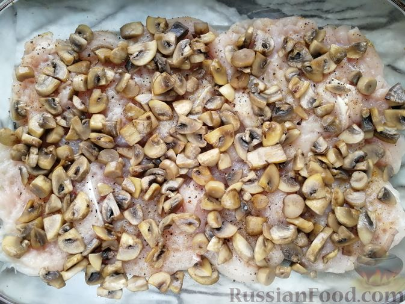
Шаг 7. Сверху выкладываем обжаренные грибы.
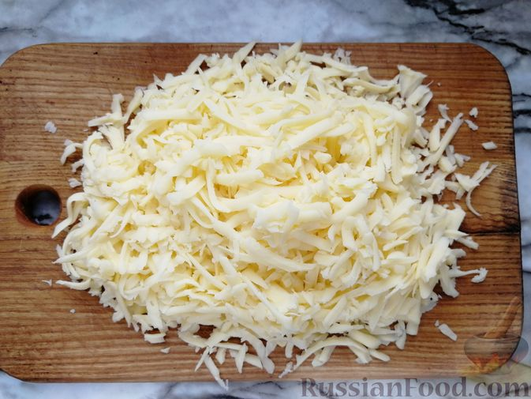
Шаг 8. Сыр натираем на крупной тёрке.
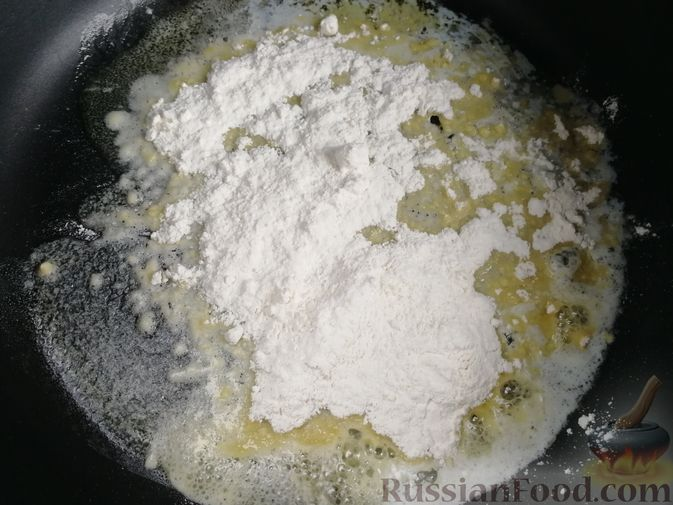
Шаг 9. В чистой сковороде растапливаем сливочное масло и добавляем муку.
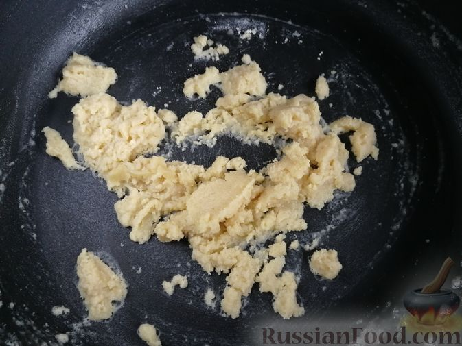
Шаг 10. Обжариваем, помешивая, 1-2 минуты на среднем огне.
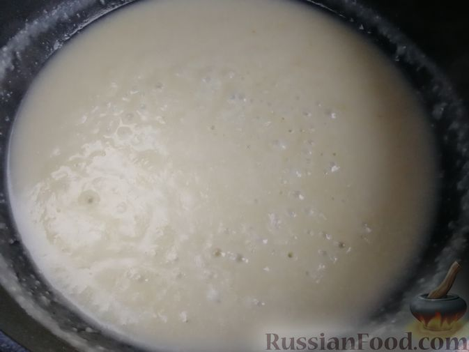
Шаг 11. Постепенно вливаем к обжаренной муке 500 мл горячей воды, готовим на маленьком огне до однородности, помешивая.
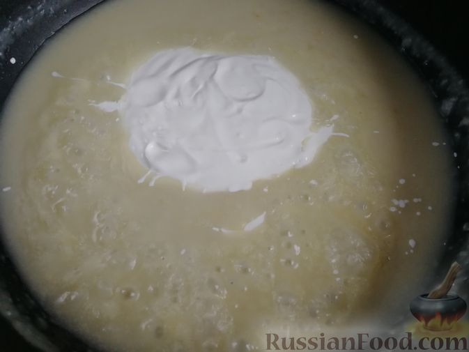
Шаг 12. Добавляем сметану и перемешиваем.
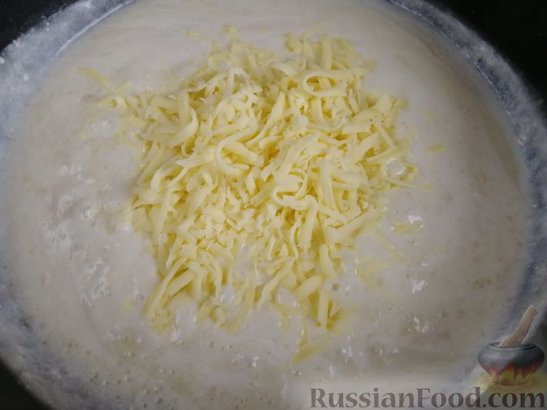
Шаг 13. Выкладываем треть сыра. Готовим, помешивая, до расплавления сыра.
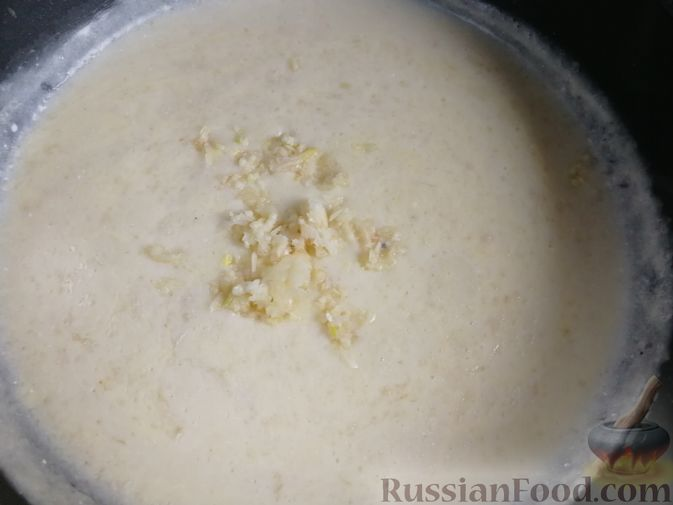
Шаг 14. Чеснок очищаем, пропускаем через пресс и добавляем в сковороду. Немного солим и перчим (по 1-2 щепотке).
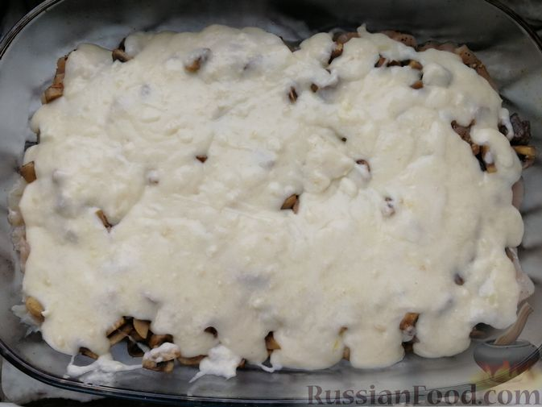
Шаг 16. Приготовленным соусом заливаем содержимое формы. Отправляем заготовку в разогретую до 180 градусов духовку на 40 минут.
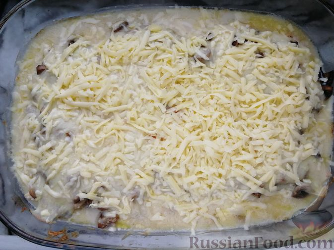
Шаг 17. Затем форму достаём, содержимое посыпаем оставшимся сыром.
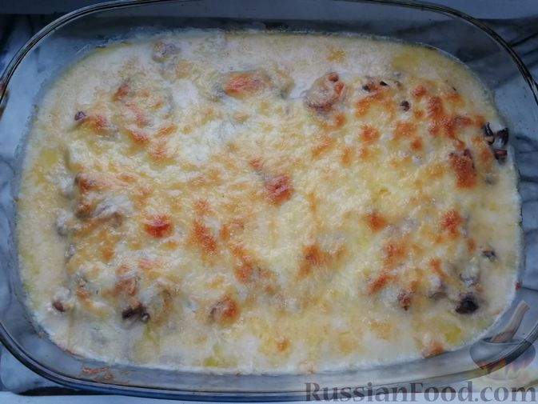
Шаг 18. Возвращаем в духовку ещё на 10-15 минут, чтобы сыр зарумянился.
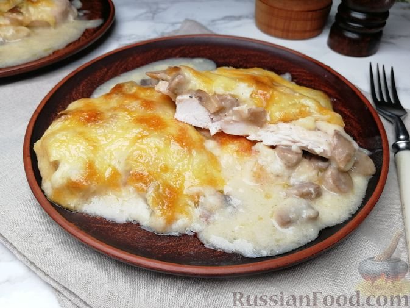
Шаг 19. Куриное филе с грибами, запечённое в сметанно-сырном соусе, готово. Раскладываем блюдо по тарелкам и подаём.